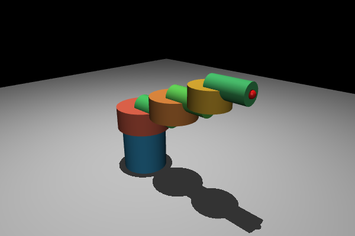
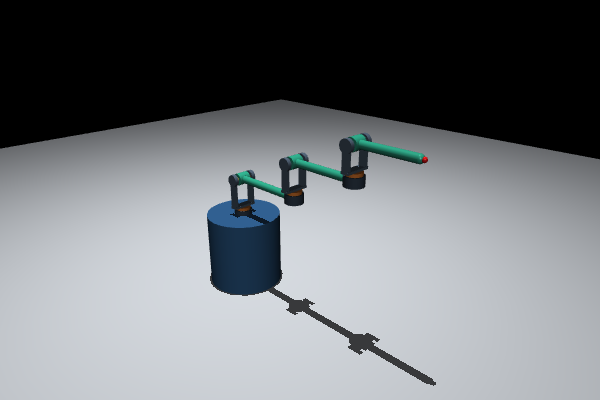
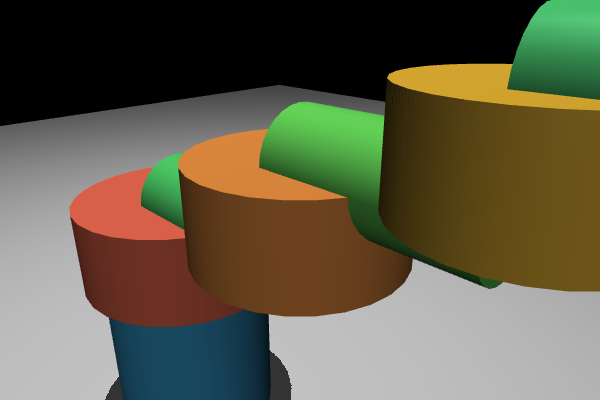
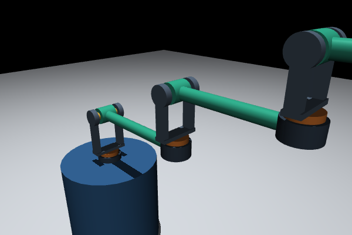
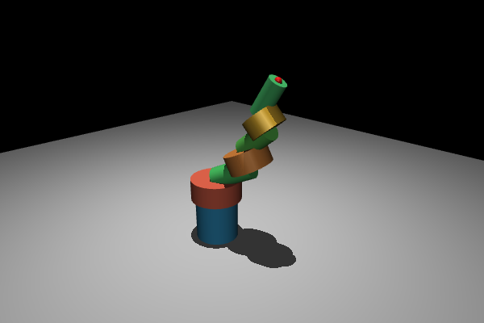
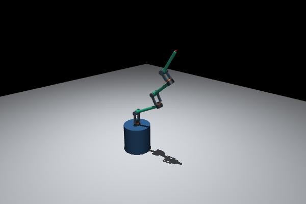

ROBOT · 2026-10-29 · 同相機前後比較
保留六個關節，讓裝配與轉動空間看得清楚
粗圓柱改成薄轉盤、叉耳、轉軸與細連桿。關節位置與角度範圍保留，實體也參與碰撞。
真實 MuJoCo 模型渲染本地圖片・可離線開啟
1. 全貌：六個關節與末端位置不變
兩張都是零姿態。修改後可分辨承座、轉盤、叉耳與連桿的分工。
修改前 · 粗圓柱模型


修改後 · 六關節叉耳式模型


2. 關節近景：看得到轉軸與間隙
相同零姿態、相同放大相機。這次處理的是裝配穿插與轉動空間，沒有關閉碰撞。
修改前 · 轉盤與連桿互相穿插


修改後 · 叉耳托住 pitch 轉軸


3. 組合姿態：不只看水平伸直
前後都設定 [20, 25, −15, 15, 10, 20]°，順序為 yaw1、pitch1、yaw2、pitch2、yaw3、pitch3。
修改前 · mixed_a


修改後 · mixed_a

